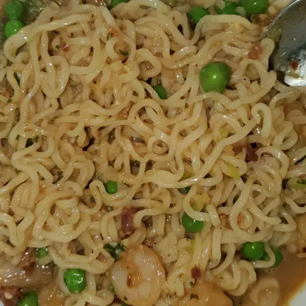

Ramen Carbonara

Description
Carbonara is known as a quick-to-fix meal, but get dinner done even sooner by using ramen instead of traditional pasta.
Top with additional Parmesan if desired.
Ingredients
- 2 slices bacon, chopped
- ½ cup chopped onion
- 2 (3 ounce) packages ramen noodles (flavor packets discarded)
- ½ cup frozen peas
- 1 egg
- ½ cup shredded Parmesan cheese
- ¼ teaspoon kosher salt
- 1 pinch red pepper flakes
- Chopped fresh parsley
Steps
- Cook bacon in a large skillet over medium heat until crisp, about 5 minutes. Transfer to paper towels to drain. Add
onion to bacon drippings in skillet; cook until tender, 3 to 5 minutes.
- Meanwhile, cook ramen in a saucepan according to package directions, adding peas the last minute of cooking. Reserve
1/2 cup cooking water; drain.
- Whisk together egg, Parmesan, onion and drippings, salt, and red pepper in a bowl. Add hot ramen and cooked bacon.
Toss to coat, adding enough reserved cooking water to make a creamy consistency. Top servings with parsley.
Go Back